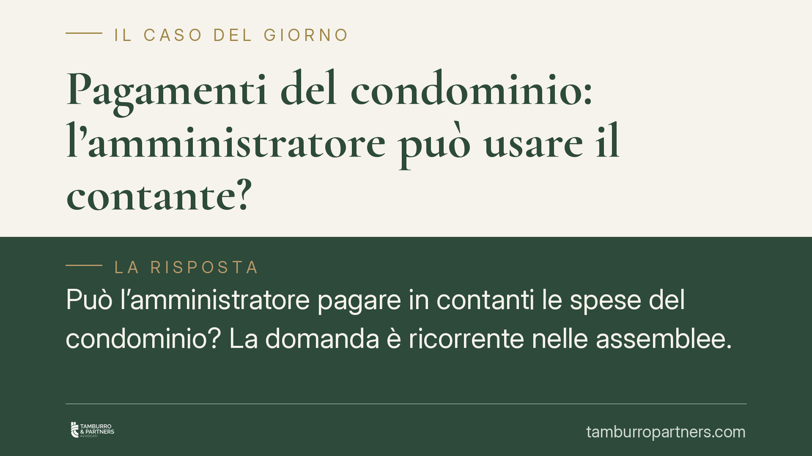

Pagamenti del condominio: l'amministratore può usare il contante?
Può l'amministratore pagare in contanti le spese del condominio? La domanda è ricorrente nelle assemblee. La risposta nasce dall'intreccio tra l'obbligo di conto corrente condominiale previsto dall'art. 1129 c.c. e i limiti generali all'uso del contante. Vediamo cosa prevede il diritto vigente e quali cautele adottare nella gestione ordinaria.

Il contesto
La gestione finanziaria del condominio è uno dei terreni più delicati del rapporto tra amministratore e condòmini. La tracciabilità dei movimenti non è un formalismo: serve a garantire trasparenza, a consentire il controllo da parte dei condòmini e a proteggere lo stesso amministratore da contestazioni.
Va chiarito subito un punto. Circolano in rete riferimenti a un presunto "D.Lgs. 33/2025" che imporrebbe il bonifico obbligatorio verso gli appaltatori con decorrenza aprile 2026. Allo stato, non risulta vigente una norma di quel contenuto specifico sulla materia condominiale. Per questo preferiamo ancorare l'analisi a fonti certe e verificabili, senza presentare come diritto vigente previsioni non confermate.
Inquadramento normativo
Il riferimento centrale è l'art. 1129 c.c. In particolare, il settimo comma impone all'amministratore di far transitare le somme ricevute a qualunque titolo dai condòmini o da terzi, nonché quelle a qualsiasi titolo erogate per conto del condominio, su uno specifico conto corrente, postale o bancario, intestato al condominio.
La norma attribuisce inoltre a ciascun condòmino il diritto di chiedere all'amministratore di prendere visione ed estrarre copia, a proprie spese, della rendicontazione periodica relativa a quel conto. L'inosservanza dell'obbligo rientra, insieme ad altre fattispecie, tra le gravi irregolarità che possono giustificare la revoca giudiziale dell'amministratore.
A questo si collega l'art. 1130-bis c.c., che disciplina il rendiconto condominiale: un documento che deve contenere voci di entrata e di uscita e ogni altro dato relativo alla situazione patrimoniale, ai fondi disponibili e alle eventuali riserve, espresse in modo da consentirne l'immediata verifica.
Sul versante dell'uso del contante opera poi la disciplina antiriciclaggio (D.Lgs. 231/2007 e successive modifiche), che fissa limiti generali al trasferimento di denaro contante tra soggetti diversi. Tale soglia è stata più volte modificata nel tempo: prima di indicare un importo in assemblea o in un contratto, è indispensabile verificare il valore attualmente vigente, perché un dato non aggiornato espone a errori.
Cosa significa in pratica
Il principio è lineare: il denaro del condominio deve muoversi attraverso il conto intestato al condominio. Questo è un dovere gestorio dell'amministratore, non una semplice buona prassi.
Ne discende che i pagamenti verso fornitori e appaltatori dovrebbero di regola essere eseguiti con strumenti tracciabili (bonifico, assegno non trasferibile), così da lasciare evidenza documentale in rendiconto. I pagamenti non tracciati, specie di importo rilevante, rendono difficile la verifica da parte dei condòmini e possono entrare in tensione con i limiti antiriciclaggio.
Resta fisiologico che alcune piccole spese vengano gestite con prelievi documentati dal conto condominiale. Il discrimine non è tanto il mezzo in sé, quanto la documentabilità del movimento e la sua coerenza con il rendiconto.
Per i condòmini, il versamento delle quote in contanti è possibile nei limiti generali sull'uso del contante, ma è preferibile il canale tracciato, che semplifica la riconciliazione contabile e riduce il contenzioso sul pagato/non pagato.
Cosa fare in concreto
- Verifica il conto condominiale. Assicurati che esista un conto intestato al condominio e che ogni entrata e uscita vi transiti, come richiede l'art. 1129 c.c.
- Privilegia strumenti tracciabili. Paga fornitori e appaltatori con bonifico o assegno non trasferibile; conserva fatture e quietanze collegate al movimento.
- Documenta ogni prelievo. Per le piccole spese gestite in contanti, mantieni giustificativi puntuali e riconducibili alle voci del rendiconto ex art. 1130-bis c.c.
- Aggiorna la soglia contante. Prima di indicare un limite per i versamenti in contanti delle quote, controlla l'importo antiriciclaggio in vigore nel momento specifico.
- Non pubblicare in assemblea norme incerte. Evita di dare per vigenti riforme non confermate: distingui sempre il diritto vigente dalle proposte in discussione.
Conclusioni
La tracciabilità dei pagamenti condominiali non nasce da un singolo divieto di usare contanti, ma dal sistema disegnato dagli artt. 1129 e 1130-bis c.c., integrato dai limiti antiriciclaggio. L'amministratore che fa transitare i movimenti sul conto condominiale e documenta ogni spesa tutela i condòmini e sé stesso. Eventuali riforme future andranno valutate quando saranno effettivamente vigenti, con i relativi estremi.
---
*Contributo informativo a cura di Tamburro & Partners - Avv. Giuseppe Tamburro. Non costituisce parere legale.*
Ogni condominio ha una storia a sé.
Se gestisci un'amministrazione e vuoi un confronto su una specifica questione condominiale, scrivi allo studio. Ti rispondiamo entro un giorno lavorativo.